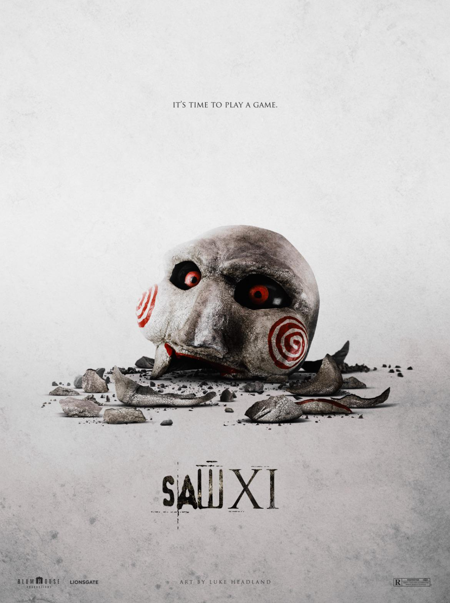
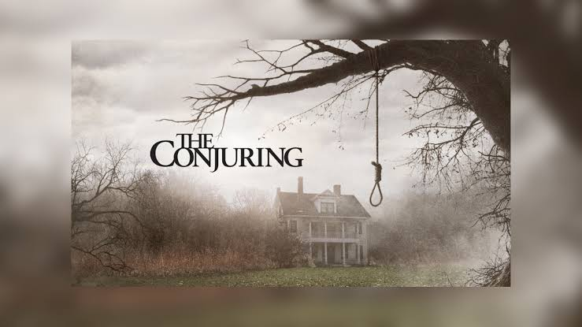
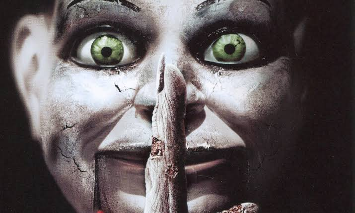

James Wan
James Wan is a filmmaker known for his work in the horror genre. His work focuses on supernatural stories and suspenseful situations.
His filmmaking style uses dark environments, suspense and psychological horror to create an unsettling atmosphere.
Other Films
- Saw (2004) — Horror / Mystery
- The Conjuring (2013) — Horror / Supernatural
- Aquaman (2018) — Superhero / Action
- Dead Silence (2007) — Horror / Mystery
Other Film Posters

Saw
Two strangers wake up in a mysterious room and must uncover the terrifying truth behind their captivity.

The Conjuring
Paranormal investigators help a family facing a terrifying supernatural presence in their home.
Aquaman
Arthur Curry must embrace his destiny as the ruler of Atlantis and protect both worlds.

Dead Silence
A man returns to his hometown to investigate the mysterious death of his wife.